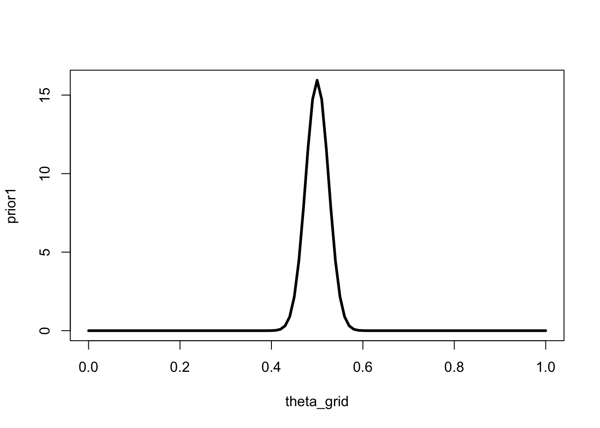
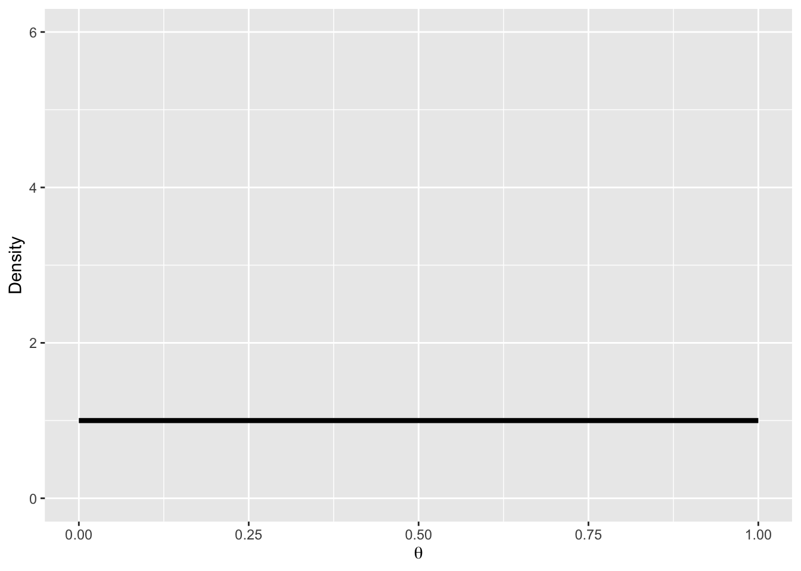
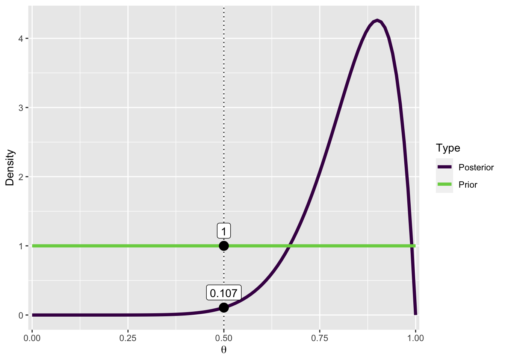

Data analysis: II
Bayesian hypothesis testing/model comparison.
![]()
What have we done so far?
We have briefly looked at how to estimate parameters in a very simple model, and we touched upon how to quantify uncertainty in our parameter estimates.
What is Bayesian statistics?
- It is important to distinguish between parameter estimation and hypothesis testing.
- Hypothesis testing means comparing models - thus it is more complicated than estimation.
A model can be is a set of parameters that we are using to predict the observeed data. For example, in the card game, we had several different prior assumptions about the abilities of players A and B. One prior expressed our belief that both players were equally good, whereas another prior expressed the belief that either player A or player was better. These priors, together with our assumptions about the distrisbution of the data, form a model.
Bayesian parameter estimation
In Bayesian parameter estimation, we focus on one model \(\mathcal{M}\). The inferential goal is the posterior distribution, and we can obtain this by applying Bayes’ rule (using MCMC or other methods).
\[ p(\theta | y) = p(\theta) \cdot \frac{p(y | \theta)}{p(y)} \]
We can rewrite Bayes rule, including the dependency of the parameters \(\mathbf{\theta}\) on the model \(\mathcal{M}\)):
\[ p(\theta | y, \mathcal{M}) = \frac{p(y|\theta, \mathcal{M}) p(\theta | \mathcal{M})}{p(y | \mathcal{M})} \]
where \(\mathcal{M}\) refers to a specific model. This model is determined by the prior distribution of the parameters \(p(\theta | \mathcal{M}\) and the distribution of the data \(\mathbf{y|\theta, \mathcal{M}\).
The marginal likelihood \(p(y | \mathcal{M})\) now gives the probability of the data, averaged over all possible parameter values under prior in model \(\mathcal{M}\).
The marginal likelihood \(p(y | \mathcal{M})\) is usually neglected when looking at a single model, but becomes important when comparing models.
Writing out the marginal likelihood \(p(y | \mathcal{M})\): \[ p(y | \mathcal{M}) = \int{p(y | \theta, \mathcal{M}) p(\theta|\mathcal{M})d\theta} \]
we see that this is averaged over all possible values of \(\theta\) that the model will allow.
The priors on \(\theta\) are important, because they determine the probability of possible values of \(\theta\).
The model evidence will depend on what kind of predictions a model can make. This gives us a measure of complexity – a complex model is a model that can make many predictions.
The problem with making many predictions is that most of these predictions will turn out to be false. The complexity of a model depends on (among other things):
- the number of parameters (as in frequentist model comparison)
- the prior distributions of the model’s parameters
When a parameter priors are broad (uninformative), those parts of the parameter space where the likelihood is high are assigned low probability. Intuitively, if one hedges one’s bets, one has to assign low probability to parameter values that make good predictions, because one has more possible parameter values.
The following prior makes quite a strong prediction about the value of \(\theta\) - it is centred on \(0.5\), and the spread is small. Both small and large values are assigned very little probability.
theta_grid <- seq(0, 1, length = 101)
prior1 <- dbeta(theta_grid, shape1 = 200, shape2 = 200)
plot(theta_grid, prior1, "l")
The next prior makes less strong predictions, in the sense that it assigns higher probability to small and large values of \(\theta\).
A model that makes more precise predictions, i.e. a model with a stronger prior, is considered less complex that a model that makes many predictions.
Bayesian hypothesis testing
Now consider that we have two models, \(\mathcal{M1}\) and \(\mathcal{M2}\). We would like to know which model explains the data better. Now we can use Bayes’ rule to calculate the posterior probability of \(\mathcal{M1}\) and \(\mathcal{M2}\) (marginalized over all parameters within the model).
\[ p(\mathcal{M}_1 | y) = \frac{P(y | \mathcal{M}_1) p(\mathcal{M}_1)}{p(y)} \]
and
\[ p(\mathcal{M}_2 | y) = \frac{P(y | \mathcal{M}_2) p(\mathcal{M}_2)}{p(y)} \]
One way of comparing the models is by taking the ratio \(p(\mathcal{M}_1 | y) / p(\mathcal{M}_2 | y)\).
\[ \frac{p(\mathcal{M}_1 | y) = \frac{P(y | \mathcal{M}_1) p(\mathcal{M}_1)}{p(y)}} {p(\mathcal{M}_2 | y) = \frac{P(y | \mathcal{M}_2) p(\mathcal{M}_2)}{p(y)}} \]
The term \(p(y)\) cancels out, giving us:
\[ \frac{p(\mathcal{M}_1 | y) = P(y | \mathcal{M}_1) p(\mathcal{M}_1)} {p(\mathcal{M}_2 | y) = P(y | \mathcal{M}_2) p(\mathcal{M}_2)} \]
On the left-hand side, we have the ratio of the posterior probabilities of the two models. On the right-hand side, we have the ratio of the marginal likelihoods of the two models, multiplied by the prior probabilities of each model. The marginal likelihoods (also know as model evidence) tell how well each model explains the data.
\[ \underbrace{\frac{p(\mathcal{M}_1 | y)} {p(\mathcal{M}_2 | y)}}_\text{Posterior odds} = \underbrace{\frac{P(y | \mathcal{M}_1)}{P(y | \mathcal{M}_2)}}_\text{Ratio of marginal likelihoods} \cdot \underbrace{ \frac{p(\mathcal{M}_1)}{p(\mathcal{M}_2)}}_\text{Prior odds} \]
\(\frac{p(\mathcal{M}_1)}{p(\mathcal{M}_2)}\) are the prior odds, and \(\frac{p(\mathcal{M}_1 | y)}{p(\mathcal{M}_2 | y)}\) are the posterior odds. These tell us which model we believe to be mode probable a priori and a posteriori.
We are particularly interested in the ratio of the marginal likelihoods:
\[ \frac{P(y | \mathcal{M}_1)}{P(y | \mathcal{M}_2)} \]
This is the Bayes factor, and it can be interpreted as the change from prior odds to posterior odds that is indicated by the data.
If we consider the prior odds to be \(1\), i.e. we do not favour one model over another a priori, then we are only interested in the Bayes factor. We write this as:
\[ BF_{12} = \frac{P(y | \mathcal{M}_1)}{P(y | \mathcal{M}_2)}\]
Here, \(BF_{12}\) indicates the extent to which the data support model \(\mathcal{M}_1\) over model \(\mathcal{M}_2\).
As an example, if we obtain a \(BF_{12} = 5\), this mean that the data are 5 times more likely to have occured under model 1 than under model 2. Conversely, if \(BF_{12} = 0.2\), then the data are 5 times more likely to have occured under model 2.
The following classification scheme is sometimes used, although it is not really necessary or helpful to classify Bayes factors.
Hypothesis testing
We usually perform model comparisons between a null hypothesis \(\mathcal{H}_0\) and an alternative hypothesis \(\mathcal{H}_1\). The terms “model” and “hypothesis” are used synonymously. A null hypothesis means that we fix the value of the parameter to a certain value, e.g. \(\theta = 0.5\). The alternative hypothesis means that we do not fix the value of the parameter, e.g. we do not assume that the parameter is \(0.5\).
It is important to note that the alternative hypothesis needs to be specified. In other words, the parameter(s) need to given a prior distribution.
In JASP, we will see Bayes factors reported as either
\[ BF_{10} = \frac{P(y | \mathcal{H}_1)}{P(y | \mathcal{H}_0)}\]
which indicates a BF for an undirected alternative \(\mathcal{H}_1\) versus the null, or
\[ BF_{+0} = \frac{P(y | \mathcal{H}_+)}{P(y | \mathcal{H}_0)}\]
which indicates a BF for a directed alternative \(\mathcal{H}_+\) versus \(\mathcal{H}_0\).
If we want a BF for the null \(\mathcal{H}_0\), we can simply take the inverse of \(BF_{10}\):
\[ BF_{01} = \frac{1}{BF_{10}}\]
Savage-Dickey Density Ratio
I f we are comparing two nested models, i.e. a model with 1 free parameter and null model (in which that parameter is fixed to a certain value) we can use the Savage-Dickey density ratio to calculate the Bayes factor.
Under the null model (\(\mathcal{H_0}\) or \(\mathcal{M_0}\)): \(\theta = \theta_0\)
under the alternative model (\(\mathcal{H_1}\) or \(\mathcal{M_1}\)): \(\theta \neq \theta_0\)
We need to specify a prior distribution of \(\theta\) under \(\mathcal{H_1}\)). If we consider the card game example, e.g. \(\theta \sim \text{Beta}(1, 1)\).
The Savage-Dickey Density Ratio is a simplified manner of obtaining the Bayes factor - we simply need to consider \(\mathcal{M_1}\), divide the posterior by the prior at the value \(\theta_0\).
Let’s look at an example from Wagenmakers et al. (2010):
You observe that a person correctly answers 9 out of 10 yes-or-no questions.
n_correct <- 9
n_questions <- 10We want to know: How likely is that to occur if the person was randomly guessing (\(\theta=0.5\))?
We will assume a uniform prior over \(\theta\):
\[ p(\theta) = Beta(1, 1) \]
pd <- tibble(
x = seq(0, 1, by = .01),
Prior = dbeta(x, 1, 1)
)
ggplot(pd, aes(x, Prior)) +
geom_line(size = 1.5) +
coord_cartesian(xlim = 0:1, ylim = c(0, 6), expand = 0.01) +
labs(y = "Density", x = bquote(theta))
The next step is to update our prior with the likelihood, in order to obtain the posterior distribution of \(\theta\):
\[ p(\theta|y) = Beta(1 + 9, 1 + 1) \]
Now we can evaluate both the prior and posterior at the value \(0.5\).
Prior:
(dprior <- dbeta(0.5, 1, 1))[1] 1Posterior:
(dposterior <- dbeta(0.5, 10, 2))[1] 0.1074219The BAyes factor $BF_{01} is then posterior density divided by the prior density:
BF01 <- dposterior / dpriorBF01[1] 0.1074219This is not so easy to interpret, so we calculate BF10 instead:
(BF10 <- 1/BF01)[1] 9.309091This means that the data are \(9.3\) times more likely to have occurred under the alternative than under the null model.
The following figure is how Bayes factors are usually visualized in JASP. Plotted are the prior and posterior distributions, and the density under both evaulated at \(\theta_0 = 0.5\).
The density of \(\theta_0\) is smaller after having taking into account the data, or in other words: the probability of \(\theta_0\) has decreased after observing the data. This allows us to conclude that the data (9 out of 10) are 9 times more likely to have occured under \(\mathcal{M1}\).
pd <- pd |>
mutate(Posterior = dbeta(x, 1 + n_correct, 1 + (n_questions-n_correct)))
pdw <- pd |>
pivot_longer(names_to = "Type",
values_to = "density",
Prior:Posterior)
pdw |>
ggplot(aes(x, density, col = Type)) +
geom_vline(xintercept = 0.5, linetype = "dotted") +
geom_line(size = 1.5) +
scale_x_continuous(expand = expansion(0.01)) +
scale_color_viridis_d(end = 0.8) +
labs(y = "Density", x = bquote(theta)) +
annotate("point", x = c(.5, .5),
y = c(pdw$density[pdw$x == .5]),
size = 4) +
annotate("label",
x = c(.5, .5),
y = pdw$density[pdw$x == .5],
label = round(pdw$density[pdw$x == .5], 3),
vjust = -.5
)
Case studies
You can generate the following datasets, and then import the CSV files into JASP.
Card game
Player A wins 6 out of 9 games.
- Do the data provide evidence that player A is better than player B?
- What is the evidence that they are both equally good?
Exam questions
A student correctly answer 9 questions out of 10.
- What is the evidence that the student was guessing (got lucky)?
- What is the evidence that the student’s ability is greater than \(0.5\)?
n_correct <- 9
n_questions <- 10
questions <- c(rep(1, n_correct), rep(0, n_questions-n_correct)) |>
sample(n_questions, replace = FALSE)
questions <- tibble(question = 1:n_questions,
correct = if_else(questions == 1, "correct", "error"),
indicator = questions)
questions |> write_csv("questions.csv")Smart drug t-test
Generate this dataframe, and export it as CSV file. In this example, we want to compare two groups’ IQ scores. One of the groups has been given a drug to make them smart, the other is the control group.
smart = tibble(IQ = c(101,100,102,104,102,97,105,105,98,101,100,123,105,103,
100,95,102,106,109,102,82,102,100,102,102,101,102,102,
103,103,97,97,103,101,97,104,96,103,124,101,101,100,
101,101,104,100,101),
Group = "SmartDrug")
placebo = tibble(IQ = c(99,101,100,101,102,100,97,101,104,101,102,102,100,105,
88,101,100,104,100,100,100,101,102,103,97,101,101,100,
101, 99,101,100,100,101,100,99,101,100,102,99,100,99),
Group = "Placebo")
SmartDrug <- bind_rows(smart, placebo) |>
mutate(Group = fct_relevel(as.factor(Group), "Placebo"))write_csv(SmartDrug, file = "SmartDrug.csv")Reuse
Citation
@online{ellis2022,
author = {Andrew Ellis},
title = {Data Analysis: {II}},
date = {2022-05-17},
url = {https://kogpsy.github.io/neuroscicomplabFS22//pages/chapters/12_data-analysis-2.html},
langid = {en}
}